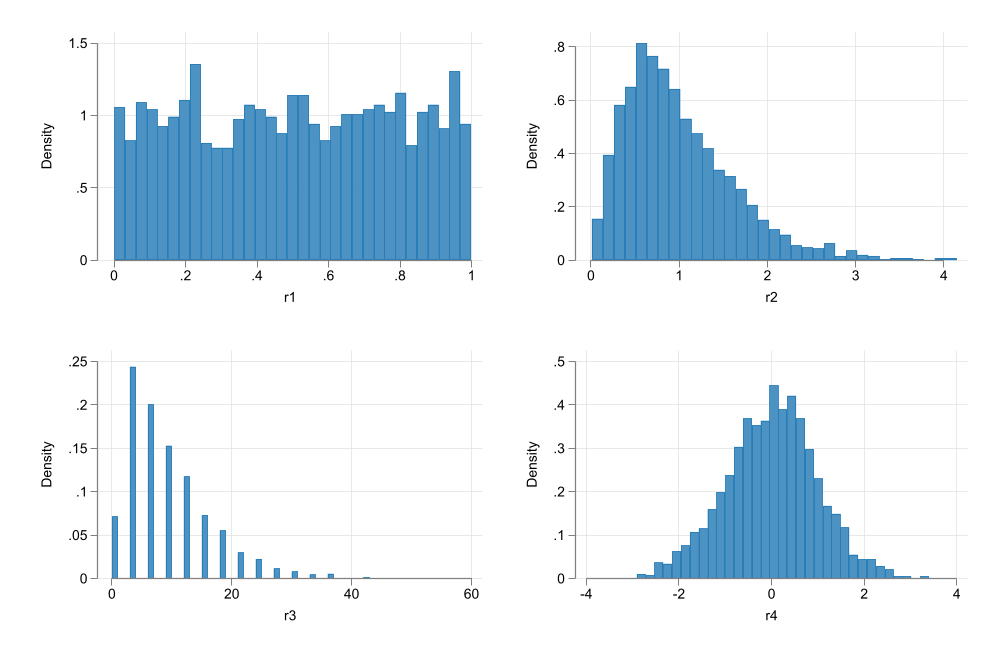
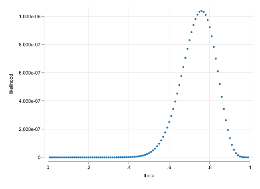
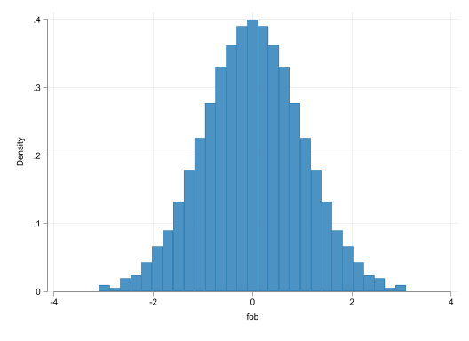
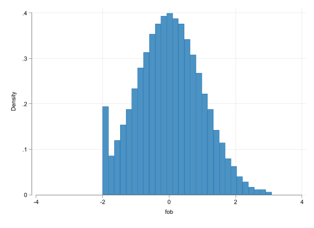
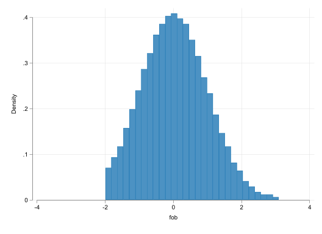

clear
set obs 2000
gen r1 = runiform()
gen r2 = rchi2(5)/5
gen r3 = round(rchi2(3))*3
gen r4 = rnormal()
set scheme white2
color_style tableau
histogram r1, name(m1, replace)
histogram r2, name(m2, replace)
histogram r3, name(m3, replace) width(1)
histogram r4, name(m4, replace)
graph combine m1 m2 m3 m4
graph export images/fig9_1.png, width(1000) replaceLimited Dependent Variable Models
MLE-Mua ha ha ha
What do we mean Limited??

What do we mean Limited??
- When we think about “limited dependent variable” models, we refer to models when the distribution of the dep.variable is “limited”
- In other words. The values it can take are restricted! (positive, or only integer), within a range, etc
- Can you still use LRM for them?
- Will anything change if you do?
- Do we care?
No we dont, but..
- We dont really care. In fact we have already use LRM on that fashion:
- LPM: Dep variable was a Dummy
- Wages: Always positive
- # Children: Countable
- But, there are couple of things one should consider.
- Models of this kind are usually heteroskedastic by construction. (robust? Weighted?)
- Predictions could made no sense.
- There are better models we could use to analyze the data
Better under some assumptions
- However, this models cannot be estimated using OLS (there is no “close form solution”)
- We may need to learn a new method: Maximum Likelihood
Probits and Logits
- LPM are easy, fast, and good for most data analysis (exploration). But they have some limitations.
- Most limitations can be overcome with alternative models: Logit or Probit
- In constrast with LPM (which aims to explain individual outcomes), Logit/probit aims to explain Conditional Probabilities:
\[p(y=1|x) = G(x\beta)\]
- where the function \(G()\) makes sure the predicted outcome is always between 0 and 1.
- Caveat: Because \(G()\) is nonlinear, this is a nonlinear model, and marginal effects are harder to estimate.
What to use for \(G()\)
- Two leading options:
\[logit: G(x\beta) = \frac{\exp{x\beta}}{1+\exp{x\beta}}\] \[probit: G(x\beta) = \Phi(x\beta)=\int_{-\infty}^{x\beta}\phi(z)dz\]
- But in practice Either will work. Then why the difference?
Probits and Logits: Latent variables
It all comes down to the Latent variable!
Assumption:
Everybody has a latent score on every “binary” decision: The value to a decision \(y^*\) \[y^* = x\beta + e \]
If \(y^*\) is above certain threshold (\(y^*>0\)), you “do” something (\(y=1\)). If not you dont (\(y=0\)).
Thus the choice between logit and probit depends on the distribution of \(e\).
- \(e\) is normal, then probit
- \(e\) is logistic, then logit
Some Math
Latent Model:
\[ y^* = x\beta + e \]
We aim to measure the probablity of a positive latent.
\[\begin{aligned} P(y^*>0|x) & = P(x\beta + e>0|x) \\ & = P( e>- x\beta|x) \\ & = 1 - P( e < - x\beta|x) = 1-G( - x\beta|x) \\ & = G(x\beta) \end{aligned} \]
last step valid only if \(G()\) is symetrical.
Marginal Effects?
- Same as before. The partial derivative!
\[\begin{aligned} p(y=1|x) &= G(\beta_0 + \beta_1 x_1 +\beta_2 x_2 ) \\ \frac{\partial p(y=1|x)}{\partial x_1} = G'(x\beta)\beta_1=g(x\beta)\beta_1 \end{aligned} \]
- But if variables are dummies, we need to estimate true effect.
\[\begin{aligned} p(y=1|x) &= G(\beta_0 + \beta_1 x_1 +\beta_2 D_2 ) \\ \frac{\partial p(y=1|x)}{\partial D_2} = G(\beta_0 + \beta_1 x_1 +\beta_2 )-G(\beta_0 + \beta_1 x_1 ) \end{aligned} \]
and yes, you could also have interactions, polynomials, etc
MLE: How does this work?
MLE: Maximum Likelihood Estimator, is an alternative method to OLS that allows you to estimate parameters in nonlinear models.
The idea of the method is to “model” the conditional distribution of the data \(F(y|x,\theta)\) or \(f(y|x,\theta)\), assuming \(X's\) are given and modifying values of \(\theta\) (distribution parameters).
\(LRM\) could be estimated via MLE, but you will need More assumptions:
- The error \(e\) is normal.
Then “simply” find the parameters for the mean and variance that “maximizes” the probability that data Comes a given distribution.
In the case of Probit/logit, there is “only” one paramter we need to identify. The conditional probabilty \(p(y=1|X)\).
- Except that we allow this to vary by \(X\)
Likelihood function for Logit/probit
\[L_i = G(x\beta)^{y=1}*(1-G(x\beta))^{y=0} \]
Under Independence:
\[L_D = L_1 \times L_2 \times \dots L_N \]
Thus we need to find the \(\beta's\) that make \(L_D\) the largest.
But because we like sums over products:
\[LL_D = \sum_{i=1}^N log(L_i) \]
clear
set obs 25
gen r = runiform()<.7
mata:
r = st_data(.,"r")
ll = J(99,2,0)
for(i=1;i<=99;i++){
theta = i/100
// Log Properties
ll[i,]= theta,exp(sum(log(theta:^(r:==1) :* (1-theta):^(r:==0))))
}
end
qui getmata ll*=ll , force
ren ll1 theta
ren ll2 likelihood
*scatter likelihood theta Number of observations (_N) was 0, now 25.

Testing?
You can test two things:
- Test coefficients (\(\beta\))
- Test marginal effects (\(G'(x\beta)\beta\))
Both test will most likely agree with each other, but some contradictions may arise. ### How?
z-test and/or Wald test: Similar to t-test and Joint F-test we cover before. But, we now make the assumption of normality (not t-distribution)
Log-Likelihood test. Similar to F-test for restricted and unrestricted model:
- Estimate both Restricted and unrestricted model. And obtain their Log Likelihoods (\(\mathcal{L}_ur\)) and (\(\mathcal{L}_r\)).
\[LR = 2 (\mathcal{L}_ur-\mathcal{L}_r) \overset{a}\sim \chi^2_q\]
Stata - Example
frause mroz, clear
* LPM with Robust Standard errors
qui:reg inlf nwifeinc educ exper expersq age kidslt6 kidsge6, robust
est sto m1
qui:logit inlf nwifeinc educ exper expersq age kidslt6 kidsge6,
est sto m2a
qui:margins, dydx(*) post
est sto m2b
probit inlf nwifeinc educ exper expersq age kidslt6 kidsge6,
est sto m3a
qui:margins, dydx(*) post
est sto m3b
Iteration 0: log likelihood = -514.8732
Iteration 1: log likelihood = -402.06651
Iteration 2: log likelihood = -401.30273
Iteration 3: log likelihood = -401.30219
Iteration 4: log likelihood = -401.30219
Probit regression Number of obs = 753
LR chi2(7) = 227.14
Prob > chi2 = 0.0000
Log likelihood = -401.30219 Pseudo R2 = 0.2206
------------------------------------------------------------------------------
inlf | Coefficient Std. err. z P>|z| [95% conf. interval]
-------------+----------------------------------------------------------------
nwifeinc | -.0120237 .0048398 -2.48 0.013 -.0215096 -.0025378
educ | .1309047 .0252542 5.18 0.000 .0814074 .180402
exper | .1233476 .0187164 6.59 0.000 .0866641 .1600311
expersq | -.0018871 .0006 -3.15 0.002 -.003063 -.0007111
age | -.0528527 .0084772 -6.23 0.000 -.0694678 -.0362376
kidslt6 | -.8683285 .1185223 -7.33 0.000 -1.100628 -.636029
kidsge6 | .036005 .0434768 0.83 0.408 -.049208 .1212179
_cons | .2700768 .508593 0.53 0.595 -.7267473 1.266901
------------------------------------------------------------------------------set linesize 255
*| classes: larger
display "Prob Models"
esttab m1 m2a m2b m3a m3b, scalar(r2 ll) cell(b(fmt(%5.3f)) ///
se(par([ ])) p( par(( )) ) ) gap mtitle(LPM Logit Logit-mfx Probit Probit-mfx)Prob Models
-----------------------------------------------------------------------------
(1) (2) (3) (4) (5)
LPM Logit Logit-mfx Probit Probit-mfx
b/se/p b/se/p b/se/p b/se/p b/se/p
-----------------------------------------------------------------------------
main
nwifeinc -0.003 -0.021 -0.004 -0.012 -0.004
[0.002] [0.008] [0.001] [0.005] [0.001]
(0.026) (0.011) (0.010) (0.013) (0.012)
educ 0.038 0.221 0.039 0.131 0.039
[0.007] [0.043] [0.007] [0.025] [0.007]
(0.000) (0.000) (0.000) (0.000) (0.000)
exper 0.039 0.206 0.037 0.123 0.037
[0.006] [0.032] [0.005] [0.019] [0.005]
(0.000) (0.000) (0.000) (0.000) (0.000)
expersq -0.001 -0.003 -0.001 -0.002 -0.001
[0.000] [0.001] [0.000] [0.001] [0.000]
(0.002) (0.002) (0.001) (0.002) (0.001)
age -0.016 -0.088 -0.016 -0.053 -0.016
[0.002] [0.015] [0.002] [0.008] [0.002]
(0.000) (0.000) (0.000) (0.000) (0.000)
kidslt6 -0.262 -1.443 -0.258 -0.868 -0.261
[0.032] [0.204] [0.032] [0.119] [0.032]
(0.000) (0.000) (0.000) (0.000) (0.000)
kidsge6 0.013 0.060 0.011 0.036 0.011
[0.014] [0.075] [0.013] [0.043] [0.013]
(0.337) (0.422) (0.421) (0.408) (0.407)
_cons 0.586 0.425 0.270
[0.152] [0.860] [0.509]
(0.000) (0.621) (0.595)
-----------------------------------------------------------------------------
N 753 753 753 753 753
r2 0.264
ll -423.9 -401.8 -401.3
-----------------------------------------------------------------------------display "LR test"
qui:probit inlf nwifeinc educ exper expersq age kidslt6 kidsge6 motheduc fatheduc,
est sto unrestricted
qui:probit inlf nwifeinc educ exper expersq age kidslt6 kidsge6 ,
est sto restricted
lrtest unrestricted restrictedLR test
Likelihood-ratio test
Assumption: restricted nested within unrestricted
LR chi2(2) = 0.29
Prob > chi2 = 0.8668Break? (5 mins!)
Censored and Truncated Data
- Logits and Probits, are not the only models that require MLE for estimation.
- Among Discrete data models, you also have ologit/oprobit for ordered responses. mlogit/mprobit for unordered ones. Extends on logit/probit.
- There are other interesting cases:
- When Data is censored.
- When Data is truncated.
Three Cases
- \(y\) is “conditionally-normal” and is Fully Observed.
- You can estimate the model using OLS or ML
qui:{
clear
set obs 999
gen p = _n/(_N+1)
gen fob = invnormal(p)
}
qui:histogram fob
- Data is observed for everyone, but is “censored” for some.
tobit- Either corner solution (how many hours you study) or Recoded: \(y_{obs} = max(c,y^*)\)
qui: replace fob = -2 if fob<-2
qui:histogram fob, xlabel(-4 (2) 4)
- Below (or above) some threshold, you do not have information on \(y\).
truncreg\[y_{obs} = y^* \text{ if } y^*>c\]

Estimation: Censored and Corner Solution
If data is censored or corner solution the estimation strategy is based on:
\[\begin{aligned} L_i &= \frac{1}{\sigma} \phi\left( \frac{y-x\beta}{\sigma} \right) \text{ if } y>c \\ &= 1-\Phi\left(\frac{x\beta}{\sigma} \right) \text{ if } y\leq c \\ \end{aligned} \]
If data is truncated, we need to “adjust” the distribution of what is observed
\[\begin{aligned} L_i &= \frac{1}{\Phi\left( x\beta/\sigma \right)} \frac{1}{\sigma} \phi\left( \frac{y-x\beta}{\sigma} \right) \text{ if } y>c \\ \end{aligned} \]
We will put -truncated regression- on the side for now. But see here for an example.
Interpretation: It depends!
- What are you interested in analyzing? and what type of data you have?
- Easiest Case. Just need to consider the coefficients (as in LRM)
\[ \begin{aligned} E(y^*|x) &= x\beta \\ \frac{\partial E(y^*|x)}{\partial x } &= \beta_x \end{aligned} \]
- The same applies if model was censored.
Its an alternative approach to Probit models, where you are interest in analyzing why is data Not censored, or why is it above some threshold. (why people work)
Extensive margin effect. \[ \begin{aligned} P(y>0|x) &= \Phi\left(\frac{x\beta}{\sigma}\right) \\ \frac{\partial P(y>0|x)}{\partial x } &= \frac{\beta_x}{\sigma} \phi\left(\frac{x\beta}{\sigma}\right) \end{aligned} \]
Note: Coefficients \(\beta\) need to be Standardized.
If corner solution, one may be interested in the effect of those with positive outcomes only.
This is the intensive margin effect. \[ \begin{aligned} E(y|y>0,x) &= x\beta + \sigma \frac{\phi(x\beta / \sigma )}{\Phi(x\beta / \sigma )} \\ \frac{\partial E(y|y>0,x)}{\partial x } &= \beta_x \left[ 1-\frac{\phi(x\beta / \sigma )}{\Phi(x\beta / \sigma )} \left( \frac{x\beta }{\sigma }+ \frac{\phi(x\beta / \sigma )}{\Phi(x\beta / \sigma )}\right) \right] \end{aligned} \]
- In this case, one may be interested in estimating the expected effect on everyone.
- Combines both Intensive and extensive margin effects. Comparable to OLS.
\[ \begin{aligned} E(y|x) &= p(y>0|x)*E(y|y>0,x) + (1-p(y>0|x))*0 \\ \frac{\partial E(y|x)}{\partial x } &= \beta_x \Phi(x\beta) \end{aligned} \]
Example
frause mroz, clear
qui:tobit hours nwifeinc educ c.exper##c.exper age kidslt6 kidsge6 , ll(0)
qui:emargins, dydx(*) estore(m1)
qui:emargins, dydx(*) predict(p(0,.)) estore(m2)
qui:emargins, dydx(*) predict(e(0,.)) estore(m3)
qui:emargins, dydx(*) predict(ystar(0,.)) estore(m4)
esttab m1 m2 m3 m4, mtitle(Latent P(y>0) E(y|y>0) E(y) ) b(3) se
----------------------------------------------------------------------------
(1) (2) (3) (4)
Latent P(y>0) E(y|y>0) E(y)
----------------------------------------------------------------------------
nwifeinc -8.814* -0.002* -3.969* -5.189*
(4.459) (0.001) (2.008) (2.621)
educ 80.645*** 0.022*** 36.312*** 47.473***
(21.583) (0.006) (9.703) (12.621)
exper 91.929*** 0.026*** 37.593*** 48.793***
(7.997) (0.002) (2.966) (3.587)
age -54.405*** -0.015*** -24.497*** -32.026***
(7.418) (0.002) (3.362) (4.292)
kidslt6 -894.020*** -0.246*** -402.551*** -526.278***
(111.878) (0.028) (50.749) (64.706)
kidsge6 -16.218 -0.004 -7.303 -9.547
(38.641) (0.011) (17.404) (22.752)
----------------------------------------------------------------------------
N 753 753 753 753
----------------------------------------------------------------------------
Standard errors in parentheses
* p<0.05, ** p<0.01, *** p<0.001Tobit has problems too
That simple equation, too much aggregation
Hayek (in Fear the Boom and Bust)
- Tobit, when addressing corner solutions, aims to explain two different actions (Engagement and intensity) with the same model. However, this may not be appropriate all the time.
- HW-Examples?
- When this happens, other models may be more appropritate like
- two part model: (literally model using two equations)
- Hurdle Model (
craggitorchurdle)
- Also…Normality…
Censored Regression
- Applies to the same cases as Tobit model. But, it usually refers to Censoring at other points of the distribution (upper censoring? mixed censoring?)
- Furthermore, applies to cases with different censoring thresholds!
- Typical Example, Unemployment duration
qui:frause recid, clear
gen lldur = ldurat // Lower Limit
gen uudur = ldurat if cens==0 // upper limit = . if censored.
intreg lldur uudur workprg priors tserved felon alcohol drugs black married educ age(893 missing values generated)
Fitting constant-only model:
Iteration 0: log likelihood = -2188.8689
Iteration 1: log likelihood = -1732.7406
Iteration 2: log likelihood = -1680.7927
Iteration 3: log likelihood = -1680.427
Iteration 4: log likelihood = -1680.427
Fitting full model:
Iteration 0: log likelihood = -2116.9831
Iteration 1: log likelihood = -1639.9495
Iteration 2: log likelihood = -1597.634
Iteration 3: log likelihood = -1597.0592
Iteration 4: log likelihood = -1597.059
Iteration 5: log likelihood = -1597.059
Interval regression Number of obs = 1,445
Uncensored = 552
Left-censored = 0
Right-censored = 893
Interval-cens. = 0
LR chi2(10) = 166.74
Log likelihood = -1597.059 Prob > chi2 = 0.0000
------------------------------------------------------------------------------
| Coefficient Std. err. z P>|z| [95% conf. interval]
-------------+----------------------------------------------------------------
workprg | -.0625715 .1200369 -0.52 0.602 -.2978396 .1726965
priors | -.1372529 .0214587 -6.40 0.000 -.1793111 -.0951947
tserved | -.0193305 .0029779 -6.49 0.000 -.0251672 -.0134939
felon | .4439947 .1450865 3.06 0.002 .1596303 .728359
alcohol | -.6349092 .1442166 -4.40 0.000 -.9175686 -.3522499
drugs | -.2981602 .1327356 -2.25 0.025 -.5583171 -.0380033
black | -.5427179 .1174428 -4.62 0.000 -.7729014 -.3125343
married | .3406837 .1398431 2.44 0.015 .0665964 .6147711
educ | .0229196 .0253974 0.90 0.367 -.0268584 .0726975
age | .0039103 .0006062 6.45 0.000 .0027221 .0050984
_cons | 4.099386 .347535 11.80 0.000 3.41823 4.780542
-------------+----------------------------------------------------------------
/lnsigma | .5935864 .0344122 17.25 0.000 .5261398 .661033
-------------+----------------------------------------------------------------
sigma | 1.81047 .0623022 1.692387 1.936792
------------------------------------------------------------------------------Truncated
- If Data is simply not there, as shown before, one needs to adjust Estimates.
- marginal effects decisions are similar to Tobit
frause mroz, clear
qui:truncreg hours nwifeinc educ c.exper##c.exper age kidslt6 kidsge6 , ll(0)
emargins, dydx(*) estore(m1b)
emargins, dydx(*) predict(e(0,.)) estore(m2b)
esttab m1 m1b m3 m2b, mtitle(Lat-Tobit Lat-Trunc E(y>0)-Tobit E(y>0)-Trunc ) b(3) se
Average marginal effects Number of obs = 428
Model VCE: OIM
Expression: Linear prediction, predict()
dy/dx wrt: nwifeinc educ exper age kidslt6 kidsge6
------------------------------------------------------------------------------
| Delta-method
| dy/dx std. err. z P>|z| [95% conf. interval]
-------------+----------------------------------------------------------------
nwifeinc | .1534399 5.164279 0.03 0.976 -9.968361 10.27524
educ | -29.85254 22.83935 -1.31 0.191 -74.61684 14.91176
exper | 48.00824 8.578316 5.60 0.000 31.19504 64.82143
age | -27.44381 8.293458 -3.31 0.001 -43.69869 -11.18893
kidslt6 | -484.7109 153.7881 -3.15 0.002 -786.13 -183.2918
kidsge6 | -102.6574 43.54347 -2.36 0.018 -188.0011 -17.31379
------------------------------------------------------------------------------
Average marginal effects Number of obs = 428
Model VCE: OIM
Expression: E(hours|hours>0), predict(e(0,.))
dy/dx wrt: nwifeinc educ exper age kidslt6 kidsge6
------------------------------------------------------------------------------
| Delta-method
| dy/dx std. err. z P>|z| [95% conf. interval]
-------------+----------------------------------------------------------------
nwifeinc | .1094149 3.682546 0.03 0.976 -7.108243 7.327072
educ | -21.28723 16.25065 -1.31 0.190 -53.13793 10.56346
exper | 32.66986 5.277772 6.19 0.000 22.32562 43.01411
age | -19.56962 5.823226 -3.36 0.001 -30.98293 -8.156303
kidslt6 | -345.6374 107.9599 -3.20 0.001 -557.2349 -134.0399
kidsge6 | -73.20291 30.80594 -2.38 0.017 -133.5814 -12.82438
------------------------------------------------------------------------------
----------------------------------------------------------------------------
(1) (2) (3) (4)
Lat-Tobit Lat-Trunc E(y>0)-Tobit E(y>0)-Trunc
----------------------------------------------------------------------------
nwifeinc -8.814* 0.153 -3.969* 0.109
(4.459) (5.164) (2.008) (3.683)
educ 80.645*** -29.853 36.312*** -21.287
(21.583) (22.839) (9.703) (16.251)
exper 91.929*** 48.008*** 37.593*** 32.670***
(7.997) (8.578) (2.966) (5.278)
age -54.405*** -27.444*** -24.497*** -19.570***
(7.418) (8.293) (3.362) (5.823)
kidslt6 -894.020*** -484.711** -402.551*** -345.637**
(111.878) (153.788) (50.749) (107.960)
kidsge6 -16.218 -102.657* -7.303 -73.203*
(38.641) (43.543) (17.404) (30.806)
----------------------------------------------------------------------------
N 753 428 753 428
----------------------------------------------------------------------------
Standard errors in parentheses
* p<0.05, ** p<0.01, *** p<0.001Break?
Poisson
Some times, Data may be non-negative, and/or countable. OLS works well, but we could do better
With Count data, some data transformations (logs) are not possible, because of the zeroes.
So instead of assuming \(y|x \sim N(\mu_x,\sigma)\), one could assume \(y|x \sim poisson(\mu_x)\)
\[P(y=k,\mu_x) = \frac{\mu_x^k e ^{-\mu_x}}{k!} \text{ with } \mu_x=\exp(x\beta)\]
- For a Poisson:
- \(E(y|x) = \exp{x\beta}\) and \(Var(y|x) = \exp{x\beta}\)
- As hinted before, Count data is heteroskedastic. And Poisson assumes some structure to that.
- Also convinient that Poisson models are very easy to interpret! (just like Log-lin models)
After estimation:
\[\frac{\Delta \% E(y|x)}{\Delta x} \simeq \beta_x \times 100 \text{ or } (\exp \beta_x-1)\times 100 \]
- Other points.
- The variance imposed in Poisson is very restrictive. This is a problem for Variance estimation!
Solution: use Robust Standard Errors! - Like LRM, poisson is robust to errors when modeling the conditional mean.
- Poisson is a very good alternative for continuous data too (if using Robust SE)
- Wage models, trade models
- The variance imposed in Poisson is very restrictive. This is a problem for Variance estimation!
Example
frause crime1, clear
qui: reg narr86 pcnv avgsen tottime ptime86 qemp86 inc86 black hispan born60
est sto m1
qui:poisson narr86 pcnv avgsen tottime ptime86 qemp86 inc86 black hispan born60, robust
est sto m2
qui:emargins, dydx(*) estore(m3)
esttab m1 m2 m3, se b(3) mtitle(LRM Poisson Poisson-mfx) ///
keep(pcnv ptime86 qemp86 inc86 black hispan) label varwidth(20) wrap
--------------------------------------------------------------------
(1) (2) (3)
LRM Poisson Poisson-mfx
--------------------------------------------------------------------
main
proportion of prior -0.132** -0.402*** -0.162***
convictions (0.040) (0.101) (0.040)
mos. in prison -0.041*** -0.099*** -0.040***
during 1986 (0.009) (0.022) (0.009)
# quarters employed, -0.051*** -0.038 -0.015
1986 (0.014) (0.034) (0.014)
legal income, 1986, -0.001*** -0.008*** -0.003***
$100s (0.000) (0.001) (0.001)
=1 if black 0.327*** 0.661*** 0.267***
(0.045) (0.099) (0.042)
=1 if Hispanic 0.194*** 0.500*** 0.202***
(0.040) (0.092) (0.038)
--------------------------------------------------------------------
Observations 2725 2725 2725
--------------------------------------------------------------------
Standard errors in parentheses
* p<0.05, ** p<0.01, *** p<0.001Other Methods of interest
- MLE opens the door to other methods that may be more approriate to analyze data
- They may even be able to handle otherwise unsolvable data problems.
- ologit, oprobit: Ordered qualitative variables
- mlogit, mprobit: Unordered Qualitative variables
- heckman: Endogenous Sample Selection
- fractional regression model: When the depvariable is an index
- etc etc
- Worth knowing, but not for the exam!
Thats all.
Next class: Pool and Basic Panel data analysis